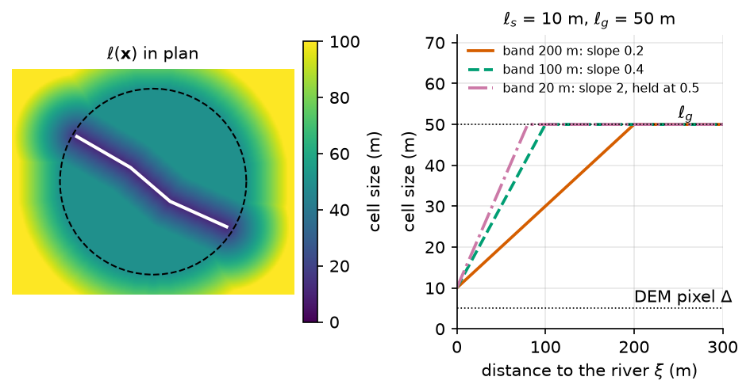
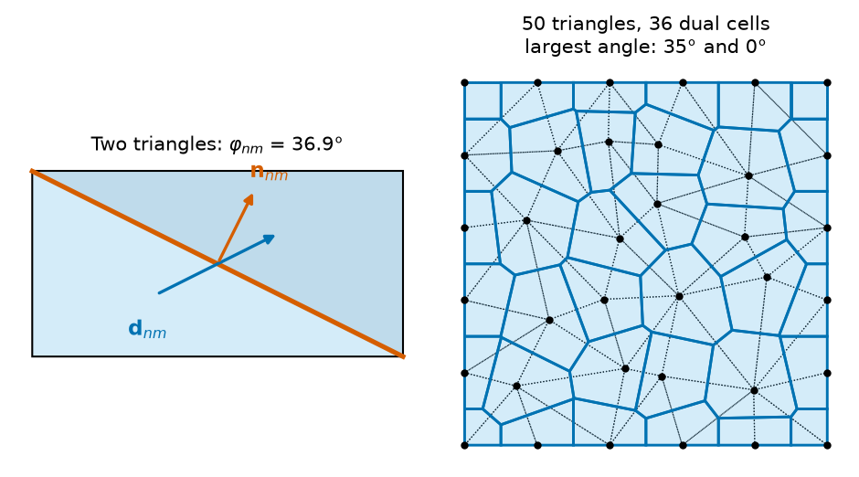
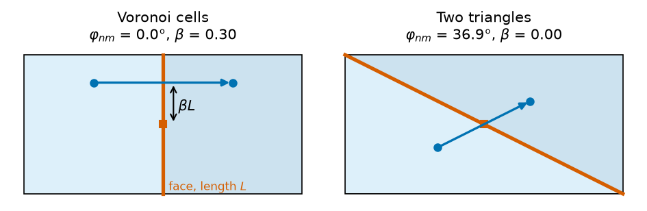
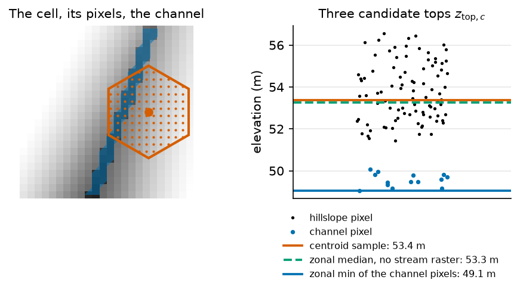
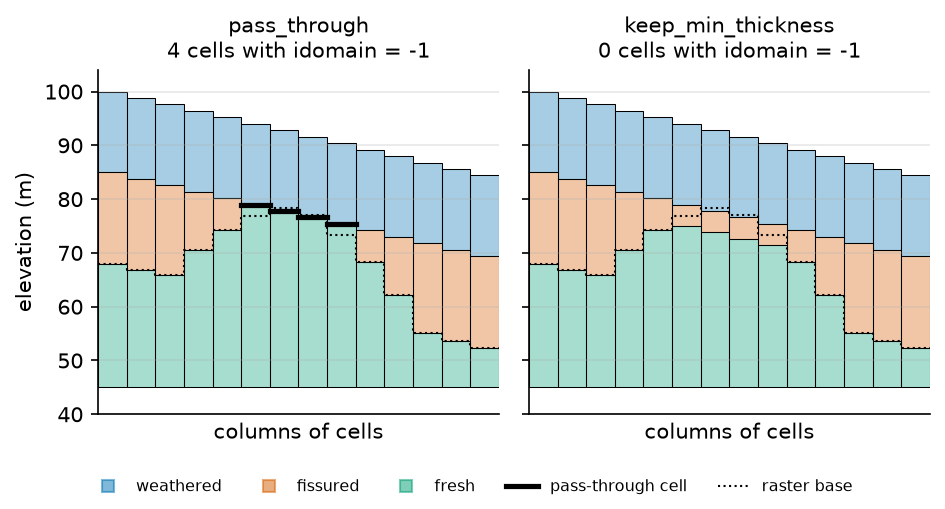
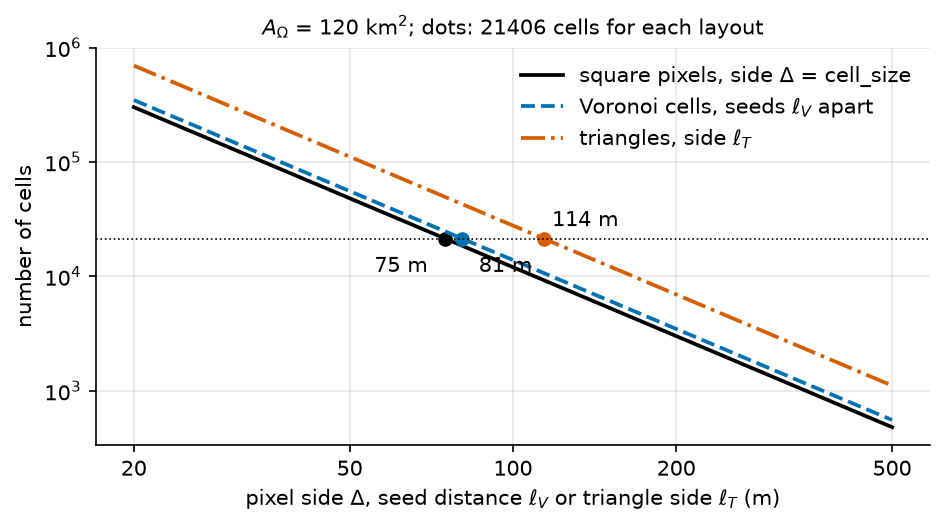

The mesh#
The solver does not see the DEM. It sees cells, each with one top, one bottom and one center. This page explains how the code builds these cells from the DEM and how it checks them.
Note
MODFLOW 6 reads every grid as a DISV grid, and this page follows it. MODFLOW-NWT and Boussinesq read one engine each (Mesh engines), and Boussinesq ignores the top sampling of 6. The top of a cell. The use of the cells by the solvers is on The solvers of the aquifer, the XT3D terms on XT3D on irregular meshes and the keys on [mesh].
The chain in one list#
The code builds the cells in this order.
The top from the DEM \(Z\), the bottom from the depth model.
A planar mesh from the engine of
mesh.engine: squares (1. The regular engine), triangles (3. The triangle engine) or Voronoi cells (4. The Voronoi engine). The planner first cleans the lines the mesh follows and smooths the outline of the catchment (Cleaning the lines), and the last two engines follow a size field (2. The lines and the size field).One top (6. The top of a cell) and one bottom per cell.
A check of the thickness (9. The checks the code applies), then the layers (7. Thickness and layers).
The export to MODFLOW 6 as a DISV grid. A cell with no valid top or bottom is inactive.
Engine |
Cells |
Center |
Connections |
Lines it follows |
|---|---|---|---|---|
|
squares, one per DEM pixel or larger |
cell center |
orthogonal |
rivers as chains of cells, contacts and shores as staircases |
|
triangles |
mean of the vertices |
not orthogonal, XT3D set by |
rivers, contacts and shores as edges |
|
polygons |
the generator |
orthogonal |
rivers as chains of cells, contacts and shores as faces |
Notation of this page
Symbol |
Meaning |
Unit |
Set by |
|---|---|---|---|
\(n, m\) |
cell indices; \(\mathcal{N}(n)\) is the set of cells that share a face with \(n\) |
the grid, The mesh |
|
\(a_n\) |
plan area of cell \(n\) |
m² |
the grid |
\(G_{nm}\) |
conductance between cells \(n\) and \(m\) |
m²/s |
derived from \(K\), the geometry and the heads |
\(\Omega\) |
the meshed domain |
the catchment and |
|
\(A_\Omega\) |
area of the meshed domain |
m² |
derived |
\(Z\) |
the DEM, one value \(Z_p\) per pixel \(p\) |
m |
|
\(\Delta\) |
side of a DEM pixel |
m |
the DEM |
\(N_S, N_T, N_V\) |
number of cells of a structured grid, of a triangle mesh, of a Voronoi mesh |
derived |
|
\(\ell_T, \ell_V\) |
side of an equilateral triangle, and distance between neighbouring Voronoi generators |
m |
derived |
\(\ell_g\) |
background cell size |
m |
|
\(\ell_s\) |
cell size on a refined line, such as a river |
m |
|
\(\xi_s\) |
distance over which the size grows back to \(\ell_g\) |
m |
|
\(\xi\) |
distance from a point to a refined line |
m |
derived |
\(\ell(\mathbf{x})\) |
wanted cell size at the point \(\mathbf{x}\), the size field of the graded engines |
m |
derived |
\(\ell_b\) |
background cell size at a point, \(\ell_g\) inside the catchment and larger outside it |
m |
derived |
\(\kappa\) |
growth factor of the background cell size outside the catchment |
||
\(\sigma_k\) |
growth of the cell size per metre of distance from refined line \(k\) |
m/m |
derived |
\(L_x\) |
extent of the domain along one axis |
m |
derived |
\(\sigma_{\max}\) |
largest growth of the cell size per metre of distance |
m/m |
|
\(\mathbf{s}_i\) |
generator of Voronoi cell \(i\), which is the centre of the cell |
m |
derived |
\(\mathbf{d}_{nm}\) |
vector from the centre of \(n\) to the centre of \(m\) |
m |
the grid |
\(\mathbf{n}_{nm}\) |
unit normal of the face shared by \(n\) and \(m\) |
the grid |
|
\(\varphi_{nm}\) |
non-orthogonality of a connection, the angle between \(\mathbf{d}_{nm}\) and \(\mathbf{n}_{nm}\) |
degree |
derived |
\(P_c, P_c^{\mathrm{ch}}\) |
DEM pixels whose centre falls in cell \(c\), and those of them on a channel |
derived |
|
\(n_{\min}\) |
pixels a cell needs for a hillslope statistic |
||
\(\varepsilon_z\) |
spike tolerance of the zonal top |
m |
|
\(b_{\min}\) |
smallest thickness kept under a zonal top |
m |
|
\(z_{\mathrm{top},c}, z_{\mathrm{bot},c}\) |
top and bottom of cell \(c\) |
m |
derived |
\(\tilde z_c\) |
DEM value interpolated at the centre of cell \(c\) |
m |
derived |
\(e\) |
distance from a point of a face line to the nearest point of another line |
m |
derived |
\(n_e\) |
number of cells wanted across a gap |
||
\(\ell_e\) |
cell size asked on the chord of a gap |
m |
derived |
\(L\) |
length of a face between two cells |
m |
derived |
\(s\) |
distance from one end of a face to where the line of the two centres crosses it |
m |
derived |
\(\beta\) |
bisection offset of a face, \(\lvert s - L/2 \rvert / L\) |
derived |
1. The regular engine#
With no [mesh] section, or with engine = "regular" and no mesh.cell_size, the
cells are the pixels of the top raster and take their values with no interpolation:
A nodata pixel makes its cell inactive, and \(N_S\) counts that cell too. A coarser
mesh.cell_size gives \(\operatorname{round}(L_x/\ell_g)\) cells along an extent \(L_x\).
The code resamples the top and the bottom with a bilinear rule. In the zonal mode of
6. The top of a cell, a cell that covers two DEM pixels or more takes the zonal top instead. The
engine refuses a finer size with the regular engine cannot mesh finer than the DEM. The
developer key mesh.regular.shape gives the rows and columns instead.
The engine ignores mesh.river_cell_size and mesh.river_band, so a mesh finer
along the rivers needs the triangle or the voronoi engine. A river is the chain of cells
its line crosses. A contact or a shore becomes a staircase of faces, whose
distance to the line is in the quality report. A barrier takes the faces whose two centers its
line separates. MODFLOW-NWT reads this grid as a DIS grid.
2. The lines and the size field#
Cleaning the lines#
Rivers, lake shores and geology contacts come from different sources, so they often miss each
other by a few meters or carry tiny holes and repeated vertices. Before it computes any size,
the planner cleans the domain and the families of mesh.families, at a tolerance of a
tenth of a DEM pixel. It leaves a triangulation read from a file as it is. It drops the holes
smaller than the square of the local cell size, and an island counts as a hole of its lake. It
merges close vertices but keeps those another line holds, so a barrier laid on a shore stays on
it. It cuts back a river
or contact end that runs along another line, and it snaps a line end onto a line it almost
touches. A barrier is never cut back, because its length is physical. The log and the mesh QA
count each change.
The delineated catchment is the outline of a pixel mask, so it is a staircase. The planner
smooths it once, before the size field and the families read it. It does so for the triangle
and voronoi engines, and only where the mesh follows the outline. That is the case with
mesh.families.watershed_boundary at face, or when geographic.domain_extent
makes the domain the catchment or its buffer. The planner cuts each corner of a step at half a
pixel, then simplifies the line with a tolerance of half a pixel (Douglas-Peucker). No point of
the new outline lies more than one pixel from the staircase, and the area moves by a few
thousandths. A corner between two edges longer than two pixels belongs to the shape and stays.
The end of a river, the end of a barrier and a vertex of a lake shore that touch the outline stay
on it, so the outlet keeps its place. A box, the regular engine, a triangulation read from a
file and a catchment that the mesh does not follow keep their outline. If the smoothed polygon
is not valid, the outline stays a staircase and the notes say so. The declared outlet counts
as a contact of the outline, like a river end, so it stays on the outline when it lies within a
tenth of a pixel of it.
The smoothed outline travels with the cell mesh (PlanarCellMesh.smoothed_catchment). Where a
step needs the catchment, it reads the cells against this outline: the polygon fallback of the
discharge support, the catchment area fraction, the outlet search of the build and the polygon
mask of the network criterion. Without a smoothed outline these steps read the delineated
polygon.
On example 04 (DEM of 75 m, catchment of 64.6 km²), the outline goes from 421 to 160 vertices.
The area moves by -0.05 % and no point moves by more than 0.81 pixel. With the catchment as the
domain, a cell_size of 100 m and no river in the mesh, the Voronoi cells with an isoperimetric
quotient under 0.6 (4π times the area over the squared perimeter) go from 114 to 6 out of about
6500. On the triangle engine the gain shows with the buffer as the domain. The mesh goes from
8815 to 8027 cells, and the triangles with a corner under 20 degrees from 61 to 0. With the
catchment as the domain the count falls from 7263 to 6673 cells, with a box it does not move, and
neither has a corner under 20 degrees. A cell that touches the outline can change side on a band
of 0.8 pixel at most.
The size field#
The triangle and voronoi engines mesh under one size field \(\ell(\mathbf{x})\), the wanted
cell size on the DEM grid. For every engine, a size is the side of the square that has the mean
area of a cell (Three sizes, read in order). The background size \(\ell_g\) is mesh.cell_size, or
the DEM pixel when unset. Each refined line or zone adds a term. For the rivers, the size is
\(\ell_s\) = mesh.river_cell_size on the line and grows back to \(\ell_g\) over the
distance \(\xi_s\) = mesh.river_band. Lake shores and the zones of
mesh.refinement_zone.cell_size (Refinement zones drawn by a field) are other terms. The field
reads
where \(\xi_k\) is the distance to line \(k\) and
\(\sigma_k = \min\bigl((\ell_g - \ell_{s,k}) / \xi_{s,k},\ \sigma_{\max}\bigr)\) its growth per
meter. The field never goes below the DEM pixel \(\Delta\). The background \(\ell_b\) is \(\ell_g\)
in the catchment and grows outside to \(\kappa\,\ell_g\), with \(\kappa\) =
mesh.outside_factor, over at least mesh.transition_distance. Since
\(\sigma_{\max}\) = mesh.max_slope bounds every term, two neighboring cells differ in
size by a ratio of at most about \((1 + \sigma_{\max}/2)/(1 - \sigma_{\max}/2)\), which is 1.67
for the default 0.5. A smaller slope gives a smoother mesh and more cells. A triangulation read
from a file ignores the field.

Fig. 29 Left: the field around a river (white) in a catchment (dashed). Right: the size
against the distance to the river. A band of 20 m asks for a slope of 2, and
build_size_field holds it at 0.5.#
Refinement zones drawn by a field#
A refinement zone is a vector layer, or the pixels of the DEM where a field passes a threshold.
The user writes the field in mesh.refinement_zone.where and the threshold in
mesh.refinement_zone.below or mesh.refinement_zone.above. The zone is a term of
the size field, like a polygon. The cells inside it have the size
mesh.refinement_zone.cell_size, and the size grows back to the background over
mesh.refinement_zone.buffer, at \(\sigma_{\max}\) at most. The triangle and voronoi
engines follow these zones. The regular engine does not grade its cells, so it ignores them,
and the mesh QA says so.
The field height_above_stream is the height of a pixel above the first stream pixel it drains
to (HAND, [Nobre et al., 2011]). The code fills the depressions of a copy of the DEM by a
priority flood [Barnes et al., 2014], seeded on the streams and on the edge of the grid.
Then each pixel follows the steepest descent of that copy to the first stream pixel, and takes
its height on the raw DEM. The streams are the stream network traced from the DEM with the
threshold of [geographic.river_network]. A mapped network never enters. A pixel below its
stream gets 0, and a pixel whose path leaves the grid with no stream gets no height. On a grid
of 464 by 420 pixels the computation takes less than a second.
The fields watertable_depth and seepage come from an earlier run of the project, named in
mesh.refinement_zone.run. A first run on a coarse mesh gives the depth of the water table
or the seepage, which is the drain outflow per cell area in mm/d. The second mesh refines where
that field passed the threshold at any time step. The minimum over time is compared to below
and the maximum to above, so the seepage front of a wet winter counts even when the run ends in
summer. The first run is named as restart_from names a run, and it must be sealed. Its sim_id
enters the mesh request and the product key, so another first run gives another mesh. The
frozen config.toml of the new run writes that sim_id in place of the name, so a replay reads
the same run even after a later version of it exists. A replay needs that run to be still in the
project, and it stops with a message when the run is gone.
On the Nançon catchment (64.6 km², DEM of 25 m, network threshold 0.05 km²), the zone where the ground is less than 2 m above the stream covers 20 % of the catchment. A Voronoi mesh of 75 m with this zone at 25 m holds 40 043 cells, against 14 897 at 75 m and 134 074 at 25 m. The ramp around the zone also costs cells, because the size is below 75 m on 58 % of the catchment. The size ratio between two neighboring cells exceeds 1.5 on 2 % of the faces, against 0.3 % on the uniform mesh of 75 m.
The gap between face lines#
A cell larger than the space between two lines it has to follow cannot follow both. So the face lines (lake shores, barriers, contacts, the catchment boundary) and the domain outline add a term. At each point of a line, the gap \(e\) is the distance to the nearest point of another line. The same line counts as another when the way along it is more than twice the straight distance. So a narrow lake arm makes a gap, and so does a corner sharper than 53 degrees, but a right-angle junction makes none. The planner sizes the chord of a gap inside the domain as
where \(n_e\) = mesh.gap_cells is the number of cells across, 2 by default and 0 to
switch the term off. After rounding, a gap holds \(n_e\) to \(1.19\,n_e\) cells. The rivers stay
out, because a river is a chain of cells. On a generated Voronoi mesh with lakes, only the
shores the faces follow count.
3. The triangle engine#
The triangle engine builds a constrained Delaunay triangulation of \(\Omega\) with Gmsh
[Geuzaine and Remacle, 2009] under the size field. Rivers, contacts, shores and barriers are
edges, so no triangle holds two zones, and the cells of a river are the triangles on one bank.
The center of a triangle is the mean of its vertices, so a connection has an angle
(5. Flow between two cells, and the angle), and MODFLOW 6 turns XT3D on by default. An explicit
solver.modflow6.runtime.mf6_enable_xt3d wins. Gmsh cannot promise the same triangulation
twice for one input, so the workflow stores the mesh in <project>/.hmp/products/, keyed by the
request, the engine version, the builds of Gmsh and of the geometry libraries and the code of the
mesh package, and reuses it while the key is the same. On one thread gmsh redraws the same mesh.
mesh.triangle.path reads an existing triangulation instead.
Gmsh reads a size as the length of an edge, so the engine multiplies each size it gives to Gmsh
by a factor measured for the algorithm: 1.62 for delaunay, 1.58 for meshadapt and 1.52 for
frontal. A triangle then has an edge about 1.5 times longer than mesh.cell_size, and the
count follows \(A_\Omega/\ell^2\) (Three sizes, read in order). When the request has a size field, the
engine also resamples the lines at this edge length, because Gmsh keeps every vertex it
receives. The corners of the barriers stay fixed vertices. With lines in the request, Gmsh still
adds cells around them, at the bends and at the confluences. So the count stays above the
integral of the size field, by 11 % with one river and by 35 % on the dense network of the
Flume. Without lines, the field of the Flume gives 1.05.
4. The Voronoi engine#
A cell of the voronoi engine is the Voronoi (PEBI) cell of a generator \(\mathbf{s}_i\), the
points closer to \(\mathbf{s}_i\) than to any other generator, clipped to the outline \(\Omega\).
The generator is the cell center. The engine puts one generator on each vertex of a river
line, so the river runs through a chain of centers. It puts a pair of mirror generators across
each segment of a contact, a shore, a barrier or the catchment boundary, after
Berge et al. [2019], so the segment is a face. Other generators sit on the domain
boundary. Free generators fill the rest with the density \(\ell^{-2}\), and a Lloyd relaxation
weighted by \(\ell^{-4}\) moves them. So the engine draws about \(\int_\Omega \ell^{-2}\,\mathrm{d}A\)
generators, one per cell of area \(\ell^2\) (Three sizes, read in order).
So each cell lies in one zone, and the cells of a lake are those inside its shore. Where a river crosses a contact, the contact yields on a short segment, and the river cell there takes the minimum of its pixels as top (6. The top of a cell). A flow barrier never yields, and the river chain crosses it through a barrier face. Every face is the perpendicular bisector of two generators, so \(\varphi_{nm} = 0\) where both cells kept their generator as center. As a check, 36 generators on a \(6 \times 6\) lattice, the 16 inner ones moved at random, give 36 cells at \(0^\circ\) on every connection. The construction and its gates are on Mesh engines.
5. Flow between two cells, and the angle#
MODFLOW 6 writes the flow between two cells as \(G_{nm}\,(h_m - h_n)\), the two-point term of (19) [Harbaugh, 2005, Langevin et al., 2017]. It is exact only when the conductivity is isotropic in the plane and the line between the centers is perpendicular to the shared face. The code measures the departure as an angle. With \(\mathbf{d}_{nm}\) the vector between the centers and \(\mathbf{n}_{nm}\) the unit normal of the shared edge, it reads
Over the edges shared by two cells, the code keeps the median, the 95th and 99th percentiles, the maximum and the share of angles above 30 degrees. The effect on the flux and the XT3D trigger are on XT3D on irregular meshes. For example, the two triangles of a \(2 \times 1\) rectangle cut along its diagonal have their centers at \((2/3, 1/3)\) and \((4/3, 2/3)\), so \(\cos\varphi = 4/5\) and \(\varphi \approx 36.9^\circ\). The four corners of the same rectangle, taken as seeds, give four Voronoi cells of \(1 \times 0.5\), all at \(0^\circ\).

Fig. 31 Left: the two triangles above. Right: the 36 seeds of the check of 4. The Voronoi engine, their 50 triangles (dotted) and their Voronoi cells (blue).#
The two-point term also assumes that the line of the centers crosses the face in its middle. On a face of length \(L\) crossed at a distance \(s\) from one end, the bisection offset is
which is 0 for a bisected face and 0.5 when the line passes through a face end. A cell takes the largest \(\beta\) of its faces. A Voronoi face is bisected only when its two generators sit at the same distance from its two ends, so the offset can be large where the angle is zero.

Fig. 33 Left: two Voronoi cells whose generators sit 0.6 above the middle of their face
(square). Right: the two triangles above. Both measures come from planar/quality.py.#
6. The top of a cell#
The top of a cell is one number read from the DEM \(Z\) by the rule that
solver.modflow6.sgrid.top_sampling.mode picks, centroid by default. The bottom always takes
the centroid rule.
Centroid#
The code interpolates the DEM at the cell center between the four pixel centers around it, with a zero weight on a nodata pixel:
The cell is inactive when its center is outside the raster or the four pixels are nodata. On
an incised channel the center often falls on a bank, so the cell is too high. On a voronoi
mesh, a river cell whose center lies off the river line takes the minimum of its pixels in this
mode too. This happens where a contact crosses the river, where two thalwegs share a cell and
at a river end near the boundary.
Zonal#
The zonal rule reduces the pixels whose center falls in the cell. A pixel is a channel pixel
when the stream raster of the delineation marks it, with the mask widened by
solver.modflow6.sgrid.top_sampling.channel_buffer_px pixels. The code reads that raster only
when solver.modflow6.sgrid.top_sampling.channel_source asks for it, and without it every
pixel is a hillslope pixel. With the statistic of
solver.modflow6.sgrid.top_sampling.channel_stat on the channel pixels and of
solver.modflow6.sgrid.top_sampling.hillslope_stat on the others, the top reads
Then a hillslope top more than \(\varepsilon_z\) away from \(\tilde z_c\) goes back to it, which guards against a nodata edge. Channel cells are exempt, and \(\varepsilon_z = 0\) switches the guard off. A lowered top must also stay above the bottom. On the regular grid the code raises the top to at least \(z_{\mathrm{bot},c} + b_{\min}\). On a triangle or Voronoi mesh the top stays. The bottom follows it down when the column left is thinner than \(b_{\min}\) or than a tenth of the column of the center sample:
The cell then keeps the thickness of its center sample, because MODFLOW 6 cannot solve under Newton a column of a few decimeters next to neighbors of tens of meters. Elsewhere the bottom stays, so a lowered top thins every layer of the column. The log counts these changes once per build.

Fig. 35 A cell of 32 m radius over 5 m pixels, its center on a bank 18 m from a channel
incised 2 m (blue). The centroid sample and the hillslope median sit about 4 m above
the channel minimum of zonal_top.#
The zonal rule falls back to the centroid value, with a message in the log, in three cases. The surface has no georeferencing, the channel source has no stream raster, or the cells of a structured grid cover fewer than two DEM pixels.
7. Thickness and layers#
One table, [domain.layers], cuts each column into layers for MODFLOW 6 and MODFLOW-NWT
alike, and the code moves the older [modflow6.sgrid.vertical] or
[modflownwt.sgrid.vertical] to it. With domain.layers.genmtd_lay at constant,
decay or list, the layers are the same shares of the thickness in every cell
((16), The solver grid and its layers). Every layer shares the cells of the plan. A cell is
inactive in every layer when its top or its bottom is nodata, not finite, or at or below the
nodata value.
Layers by surfaces#
With genmtd_lay = "surfaces", each [[domain.layers.layer]] table gives the base of its
layer with one key: a thickness below the layer above (below the terrain for the first
layer), a depth below the terrain, an elevation, or a surface, the name of a raster of
[[data.layer_base.sources]]. The last layer ends on the base of the aquifer of
[domain.depth_model] (The domain). A raster that leaves a cell without a value is
refused. Each base stays between the base of the aquifer and the base of the layer above, so
bases never cross. Where a layer is thinner than its min_thickness, the code pinches it out
as domain.layers.pinch_out says:
|
What the cell becomes |
|---|---|
|
a vertical pass-through cell, |
|
a cell of the minimum thickness. Its base moves down, and so do the bases of the layers below it and the base of the aquifer |

Fig. 37 The base of the middle layer comes from a raster (dotted) that rises to the layer
above, with a min_thickness of 4 m. Left: the thin cells pass their thickness to the
layer below. Right: they keep 4 m and the base below them moves down.#
With pass_through, a column whose layers are all too thin keeps its thickest layer active.
idomain is 1 for an active cell, 0 for an inactive one and -1 for a pass-through cell.
MODFLOW 6 connects the cells above and below a pass-through cell. A lake over such a column
reads the active cells under it (The connections). MODFLOW-NWT has no such
cell, so it refuses pass_through in the file and in the grid. The build refuses an active
cell whose top is at or below its bottom. The code stores the layering with
vertical_layout = "surfaces" on mesh/ (Storage layout).
The top active layer#
With pass-through cells, the first layer is not always the top of the column. One function gives the top active layer of each column. A point, a well or an observation without a layer goes to that cell. The drains, the imposed heads, the evapotranspiration surface, the computational top, the filling of closed depressions and the saturated thickness of a calibration read the same cell (The solvers of the aquifer).
Three sizes, read in order#
Three keys speak of a size, and each one reads the one before it.
resolution_masks a provider for a pixel. With a DEM file, the file has its own pixel and this key does not apply.dem_resolutionaggregates that pixel before anything is delineated. It cannot be finer than the pixel of the DEM: the run refuses it. The routing surface, the catchment, the mesh and the model top take the result. Unset, the pixel stays.cell_sizesizes the cells of the model. Unset, it is the pixel from step 2. A triangle or a voronoi mesh never grades finer than this pixel, whatever a size says.
So the same run can route on 25 m, and solve on 50 m cells. A cell size changes the cells, and never the surface that was delineated.
8. How many cells a size costs#
The cost of a run grows with the number of cells, so this section counts them. For the three
engines, mesh.cell_size is the side \(\ell\) of the square that has the mean area of a
cell. Over an area \(A_\Omega\), a mesh then holds about \(A_\Omega/\ell^2\) cells. The grid of
pixel side \(\Delta\) is the case \(N_S = A_\Omega/\Delta^2\). With a size field,
\(A_\Omega/\ell^2\) becomes \(\int_\Omega \ell(\mathbf{x})^{-2}\,\mathrm{d}A\).
The same count does not give the same edge. An equilateral triangle of side \(\ell_T\) has the area \(\frac{\sqrt3}{4}\ell_T^2\), and a Voronoi hexagon has \(\frac{\sqrt3}{2}\ell_V^2\) when neighboring seeds are \(\ell_V\) apart, so
Setting \(N_T = N_V = A_\Omega/\ell^2\) gives \(\ell_T = \sqrt{4/\sqrt3}\,\ell \approx 1.52\,\ell\) and \(\ell_V = \sqrt{2/\sqrt3}\,\ell \approx 1.07\,\ell\). So at the cell count of a grid of pixel \(\Delta\), the Voronoi generators are \(1.07\,\Delta\) apart and the triangles have a side of \(1.52\,\Delta\).
A square of 4 km at a cell_size of 100 m expects 1600 cells. The regular and voronoi
engines give 1600, and the triangle engine gives 1652, which is 3 % more. The engine contract
holds every engine to 10 % of the expected count on a uniform size. With lines to follow, the
triangle engine stays above the integral (3. The triangle engine). On the Flume, with cells of
25 m along the rivers in a background of 150 m, the count over the integral is 1.00 for voronoi
and 1.35 for triangle.
Example 04 declares no [mesh] section. Its box holds 172 by 157 cells of 75 m, 27004 cells and
about \(152\ \mathrm{km^2}\), inactive cells included. The same
count means a mesh.cell_size of 75 m for each engine, with Voronoi generators about 81 m
apart and triangles of about 114 m. A real mesh refines near the interfaces, so the count of a
run is the \(\mathrm{ncpl}\) of its DISV file. Also, \(N_S\) counts the whole raster box, while a
mesh lies in \(\Omega\).

Fig. 39 (28) for \(A_\Omega\) = 120 km². Each dot holds 21406 cells. The Voronoi dot sits at 1.07 times the pixel side and the triangle dot at 1.52 times.#
9. The checks the code applies#
The code refuses a mesh when its inputs are wrong, and it stops a run when the grid it solves
is not the stored mesh. Apart from the voronoi build, it refuses no mesh for its shape. The
table lists the checks that the sections above do not give.
What is checked |
Rule |
What happens |
|---|---|---|
Solver and mesh |
the solver reads the engine of |
refused when the file is read: |
River size |
|
refused when the file is read |
Voronoi build |
each cell covers its generator, conformal faces lie on their lines, river chains are connected, the areas add up to the domain, no repeated vertex, no face under a micrometer |
the build stops with |
Solved grid |
the DISV or DIS grid of the solver is the stored mesh |
the run stops with |
Top and bottom |
one valid cell at least, and the bottom strictly below the top on every valid cell |
refused: |
Thick cells |
thickness above the larger of 10 times the median and 500 m |
warning on triangle and Voronoi meshes: |
Cell shape |
no triangle corner under 20 degrees, no face crossed more than 0.25 of its length from its middle, no concave cell |
warning at build |
Imported triangulation |
no vertex inside an edge that does not hold it, no two vertices closer than 1e-9 of the extent |
a T-junction is refused with its coordinates, duplicates warn |
Active cells |
one group, counted on the grid the solver reads after the lake mask. Faces join cells, so do vertical connections (a pass-through cell joins the layers above and below it), and so does a lake, for the active cells it touches |
warning with the number and sizes of the groups |
Point on the mesh |
a point outside the mesh lies within one cell size (the square root of the area) of a cell |
no cell for the point, and a warning that names it, on every solver |
Eight fields measure the cells one by one, computed on read: mesh_cell_area,
mesh_neighbour_ratio (size ratio between neighbors), mesh_center_offset (offset of a
center from its cell centroid), mesh_nonorthogonality, mesh_bisection_offset,
mesh_min_angle, mesh_max_angle and mesh_concavity, how far the largest angle exceeds
180°. A corner within 0.1° of 180° counts as straight. The layer mesh_cells of hmp export
carries the eight, and it names the two angle columns min_angle_deg and max_angle_deg. The
quality report MeshQA is stored as the attribute qa of mesh/. It holds their quantiles,
the number of concave cells and, for each line family, how much of the line the faces follow. A
mesh with a poor report still runs.
10. The catchment of a cell#
The delineated catchment is a polygon, and its outline can cross a cell. The solver build stores
for each face the share of its area that lies inside the polygon, from 0 to 1, as
catchment_fraction. A cell inside has 1 and a cell outside has 0. The share is exact in
between, because the code intersects the polygon with the cells that the outline cuts, and with
no other. The basin of the descent D, the cells whose descent passes through the outlet, does not
change (Routing the hillslope drainage). It stays all or nothing, and it still gives the
catchment line of the budget and the discharge at the outlet, which are hydraulic quantities.
A total over the catchment of a quantity that varies in space sums the cell values with the
shares. budget_over does it for a term of the budget stored per cell, such as the recharge
or the seepage, over the catchment or over any polygon. catchment_mean averages a variable with the share times the area of the cell,
so a small cell counts less than a large one. A run with no stored share counts the whole cells
of the basin of D and logs it. The shares also cover the cells outside the basin that the polygon
touches. A distorted disc over a grid of 75 m shows why. A mask by cell center gives the area of
the polygon within -0.03 % (standard deviation 0.13 %) for a radius of 3 km, and within -0.06 %
(0.45 %) for 1 km. Weights limited to the basin lose the part of the polygon that falls in the
neighboring cells, and give -0.67 % and -2.0 %.
On example 04 the polygon is the staircase of the DEM, so it cuts no cell of the grid and every share is 0 or 1. The totals still differ a little from the budget line, because the basin of D and the polygon disagree on whole cells. The basin holds 13 cells outside the polygon (0.073 km²), and the polygon holds 12 cells outside the basin (0.068 km²). The recharge over the catchment is 0.01 % below the line of the budget, and the seepage is equal to it within 0.01 %. A cut cell needs a triangle or a Voronoi mesh, or a grid coarser than the DEM.
A synthetic domain has no catchment polygon and no outlet. It stores no share, its basin of D
is the largest basin of the domain, and budget_over without a polygon and catchment_mean refuse it.
Assumptions#
A cell has one top and one bottom, so the surface inside the cell is flat.
A mesh is fixed for the run. It does not move with the water table.
The conductivity is isotropic in the plane unless the flow sets
K22or the angles of the tensor, which MODFLOW 6 alone reads (The conductivity tensor).The coordinates are in a projected CRS in meters. The size field, the 1 mm merge of the Voronoi vertices and every distance of the engines rely on it.
The zonal rule takes the channel pixels from the stream raster of the delineation. It does not read the observed network.
Limits#
Boussinesq cannot run on Voronoi cells, nor MODFLOW-NWT on a refined mesh. The zonal top of MODFLOW-NWT needs
solver.modflow_nwt.sgrid.top_sampling.channel_sourceat"none".Deleting
.hmp/products/makes a resumed triangle run mesh again. On one thread gmsh redraws the same mesh, and the log warns that a rebuilt mesh may differ from the one the results were computed on.One request and one seed give one Voronoi mesh on one machine, GEOS and scipy build. Another build can give the same quality with another connectivity.
Where the size field grows at its largest slope, a Voronoi center sits off its cell centroid by about a quarter of the slope times the cell size.
A lake arm narrower than the local cell cannot hold a pair of generators. The faces then follow part of the shore, and the cells of the lake are those its polygon overlaps.
A head imposed on a side applies at the centers of the cells with a face on it: half a cell from the side on a regular grid, a third of the height on triangles, on the side for Voronoi cells.
The tenth of the column that moves a bottom under a lowered top is empirical. It keeps the cells next to a quarry solvable.
The layers are an extrusion of the plan, so the footprint and the size of the cells never change with depth.
Two face lines that meet at less than 53 degrees make a gap that closes at the corner, so the cells at its tip take the size of the DEM pixel. Lines closer than a tenth of a pixel count as one.
A nodata value read as an elevation gives a cell kilometers deep with a clean top, and the run converges. The thickness warning is the only sign, and a structured grid does not emit it.
Under Newton, XT3D can fail to converge on triangle cells, and the run stops with E401. The cause and the two ways out are on XT3D on irregular meshes.
A refinement zone that reads an earlier run needs that run in the project. A run copied to another project stops with a message when it replays.
Parameters of this page#
The keys that choose the engine, the size and the top. The keys of the layers are in [domain], those of the top in [solver] and those of the mesh in [mesh]. The cards show the defaults and the allowed values, and the developer keys are behind the developer button.
Checked by#
The tests that import the code of this page. The box is generated, so a new test appears here on the next build.
83 test files import hydromodpy.mesh.engines, hydromodpy.mesh.resample, hydromodpy.mesh.planning, hydromodpy.mesh.cells.zonal_stats, hydromodpy.mesh.planar.quality, hydromodpy.mesh.cells.in_polygons, hydromodpy.mesh.refinement_config, hydromodpy.results.run.field_envelope, hydromodpy.model.domain.layering, hydromodpy.core.fields.vertical_column, hydromodpy.solver.modflow_grid.discretization_spatial, hydromodpy.model.domain.cell_column, hydromodpy.solver.modflow6.builders.solver_options. Their names say what they check.
validation: 1
integration: 4
- A lake over a pinched layer solves in modflow6. solver
- A pinched layer solves in modflow6. solver
- Two lake voronoi stack e2e.
- Mesh rebuild. workflow
ports: 1
- Mesh.
unit: 77
- Runners trial. calibration
- Cost. catchment/stream_network
- Vertical column. core/fields
- Boundary. mesh/cells
- In polygons. mesh/cells
- Locate. mesh/cells
- Zonal stats. mesh/cells
- Engine. mesh/engines/catchment
- Engine. mesh/engines/regular
- Families. mesh/engines/regular
- Grid. mesh/engines/regular
- Face families. mesh/engines
- Engine. mesh/engines/triangle
- Families. mesh/engines/triangle
- Gmsh triangulation. mesh/engines/triangle
- Face pairs. mesh/engines/voronoi/constraints
- Plan. mesh/engines/voronoi/constraints
- Checks. mesh/engines/voronoi
- Engine. mesh/engines/voronoi
- Families. mesh/engines/voronoi
- Free seeds. mesh/engines/voronoi
- From seeds. mesh/engines/voronoi
- From triangulation. mesh/engines/voronoi
- Lloyd. mesh/engines/voronoi
- Local coords. mesh/engines/voronoi
- Tessellation. mesh/engines/voronoi
- Geometry. mesh/planar
- Quality. mesh/planar
- Barrier lines. mesh/planning
- Catchment outline. mesh/planning
- Families. mesh/planning
- Gap size. mesh/planning
- Geology contacts. mesh/planning
- Geometry cleanup. mesh/planning
- Height above stream. mesh/planning
- Input triangulation. mesh/planning
- Lake shores. mesh/planning
- Lake structures. mesh/planning
- Plan. mesh/planning
- Refinement zones. mesh/planning
- Size field. mesh/planning
- Mesh config. mesh
- Refinement config. mesh
- Resample. mesh
- Stored. mesh
- Cell column. model/domain
- Layering. model/domain
- Layers config. model/domain
- Support fields. model/domain
- Model. model
- Field envelope. results/run
- Field envelope. results
- Flow to boussinesq adapter. solver/boussinesq
- Mesh. solver/boussinesq
- Build descent. solver/modflow6
- Cutoff wall shore. solver/modflow6
- Flow barrier. solver/modflow6
- K tensor. solver/modflow6
- Lake bed carve. solver/modflow6
- Layer stack round trip. solver/modflow6
- Modflow6 robustness. solver/modflow6
- Modflow6 voronoi dual support. solver/modflow6
- Modflow6 xt3d rewet options. solver/modflow6
- Period forcing. solver/modflow6
- Solver options. solver/modflow6
- Xt3d advisor. solver/modflow6
- Catchment basin. solver/modflow_common
- Flow directions. solver/modflow_common
- Discretization spatial. solver/modflow_grid
- Flow. solver/modflow_nwt/extractors
- Nwt solver. solver/modflow_nwt
- Disconnected active cells are reported. solver
- Period steps. solver
- Freeze. workflow/steps/prepare_solver
- Prepare. workflow/steps/prepare_solver
- Mesh. workflow/steps
- Mesh inputs. workflow/steps
In the code#
What |
Where |
|---|---|
The surfaces, the plan, the top, the layers |
|
The keys of the layers, the base rasters |
|
The top active layer of a column |
|
The keys of the top |
|
The keys of the mesh |
|
The engines and their registry |
|
The request and the planner |
|
The cleaning of the lines |
|
The smoothing of the catchment outline |
|
The size field and the gap term |
|
The refinement zones drawn by a field |
|
The size of a triangle |
|
The catchment fraction and the weighted totals |
|
The centroid sample |
|
The zonal top |
|
The channel mask |
|
The Voronoi tessellation |
|
The angle of a connection |
|
The XT3D decision |
|
The mesh step and its product store |
|
The DISV export |
|
The quality report and its thresholds |
|
The checks of the table of 9. The checks the code applies |
|
The checks of an imported triangulation, of the active cells and of a located point |
|
See also#
The solvers of the aquifer: what the solvers do with the cells.
XT3D on irregular meshes: the XT3D terms and their trigger.
The groundwater flow problem: the equation the cells discretize.
[mesh]: the mesh section as a reference page.
Mesh engines: the port, the planner and the four engines.